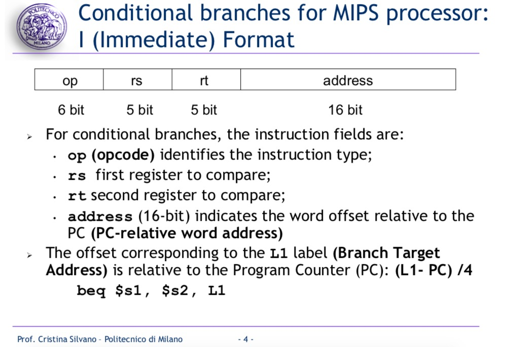
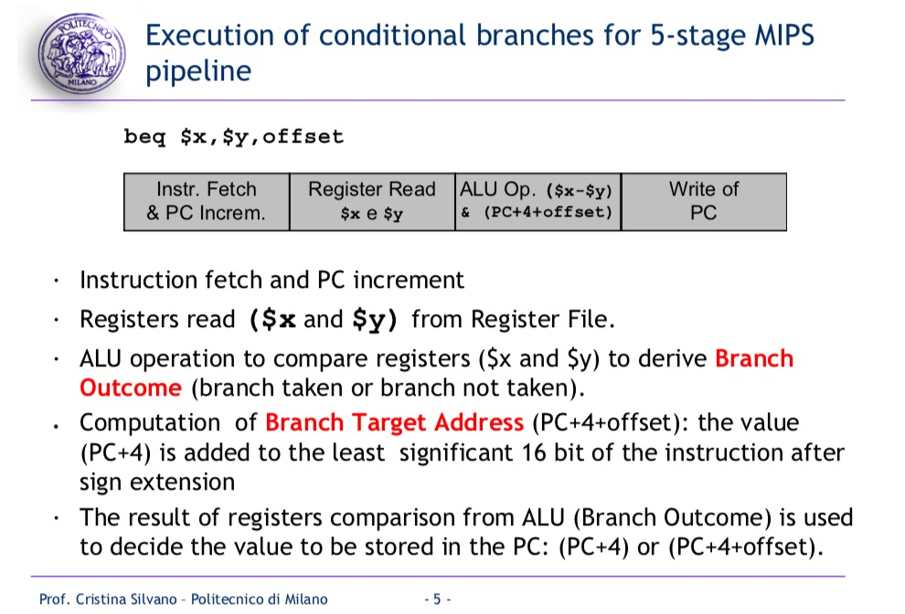
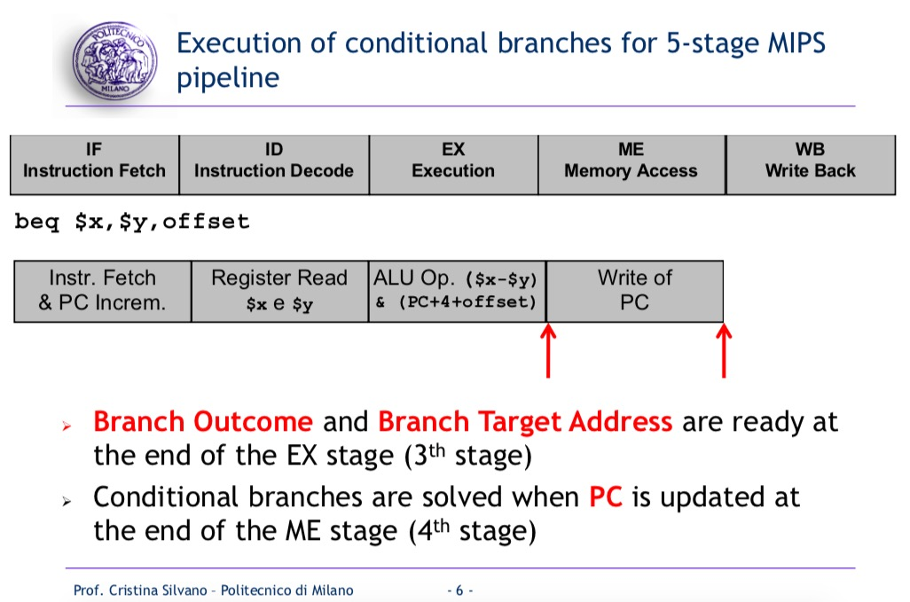
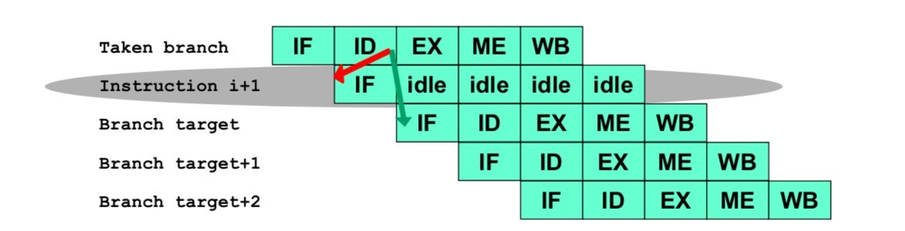
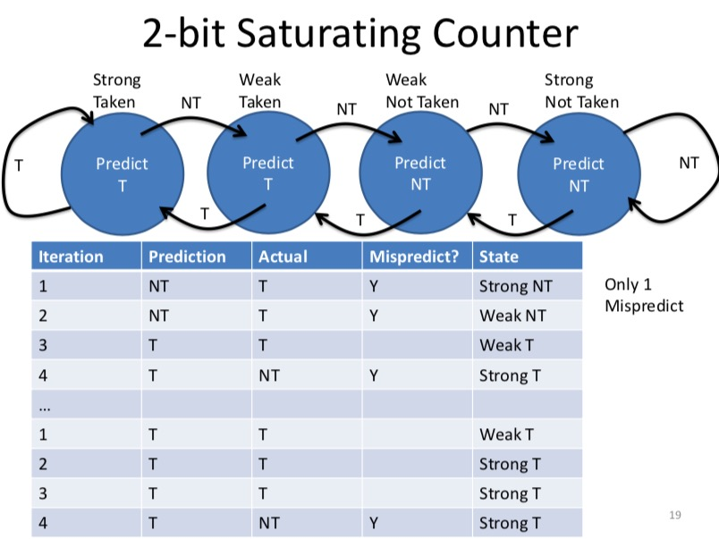
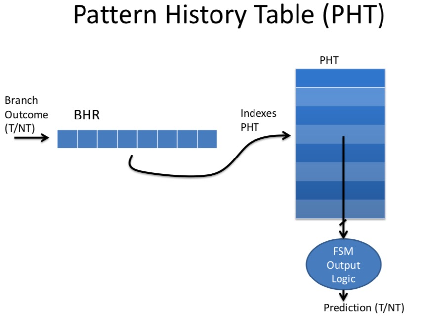

Reference: 1. http://home.deib.polimi.it/silvano/FilePDF/AAC/Lectures_2017/Lesson_2_Branch_Prediction%20_V2.pdf 2. Coursera: Computer Architecture from Princeton University.
Branch Prediction Introduction
Conditional Branch Instruction: the branch is taken only if the condition is satisfied. The branch target address is stored in the PC instead of the address of the next instruction in the sequential instruction stream. 
The execution of branch instruction:  
We can observe that Branch Outcome and Branch Target Address are ready at the end of the EX stage.
As pipelines get deeper and the potential penalty of branches increases, Branch penalty can be quite expensive: + Pentium 3: 10 cycles branch penalty + Pentium 4: 20 cycles branch penalty
What to Predict?
There are two types of information processors need to predict: 1. Predict branch outcome: to decide which branch to take 2. Predict branch/jump address: which address the processor should jump to.
More Aggressive Means for Predicting Branches
Aggressive prediction schemes fall into two classes: 1. Low-cost static schemes: rely on information available at compile time. The actions for a branch are fixed for each branch during the entire execution. The actions are fixed at compile time. 2. Dynamic schemes: based on program behavior. The decision causing the branch prediction can dynamic change during the program execution.
Static Outcome Prediction
Static branch prediction is used in processors where the branch behavior is highly predictable at compile time. ### Branch Always Not Taken: Predicted-Not-Taken We assume that the branch will not be taken, thus the sequential instruction flow we have fetched can continue. + If the prediction is correct, we can preserve performance. + If the prediction is incorrect, we need to flush the instruction already fetched and restart the execution by fetching the instruction at the branch target address. Clearly, this will result in One-cylcle penalty.
It can be poor accuracy, especially on backward branches. ### Branch Always Taken(Predicted-Taken) It can be poor accuracy, especially on if-then-else. 
Backward Taken Forward Not Taken(BTFNT)
The prediction is based on the branch direction: + Backward-going branches are predicted as taken: + Forward-going branches are predicted as not taken: It's difficult to implement because we don't know target until Decode stage.
It is a basic rule of thumb that: Backwards branches have a higher probability of being taken than forward branches For a loop, it always involves backwards branches, which is the reason why it is defined as loop. However, for if then code, the condition is equally to be true or not true.
Profile-Driven Prediction
The branch prediction is based on profiling information collected from earlier runs. This type of methods can use compiler hints.
Delayed Branch Prediction
- Branch Delay Slots: change the ISA semantics so that the instruction that follows a jump or branch is always executed.
Dynamic Outcome Prediction
The basic idea is to use the past branch behavior to predict the future.
Branch History Table(BHT): Exploting Temporal Correlation
The motivation is that: the way a branch resolves may be a good indicator of the way it will resolve the next time it executes(Temporal Correlation).
Give a figure about 2-bit saturating counter:  Generalization: n-bit saturating counter for each entry in the prediction buffer. The counter can take on values between 0 and \(2^n-1\). When the counter is greater than or equal to one-half of its maximum value. The branch is predicted as taken. Otherwise, it is predicted as untaken.
Correlating Branch Predictors: Exploiting Spatial Correlation
Firstly, give an example code block: 1
2
3
4if (x[i] < 7) then
y += 1
if (x[i] < 5) then
c -= 4
If fist condition false, second condition also false.
The Basic Idea: the n-bit BHT uses only the recent behavior of a single branch to predict the future behavior of that branch. However, the havior of nearby branch hehavior can influence the prediction of the current branch.
Branch History Register(BHR) records the direction of the last N branches executed by the processor. We store BHR in the Pattern History Table(PHT). 
Two-Level Branch Predictor
- The first level history is recorded in one (or more) k-bit shift register called Branch History Register(BHR), which records the outcomes of the k most recent branches.
- The second level history is recorded in one or more tables called Pattern History Table of 2-bit saturating counters.
The BHR is used to index the PHT to select which 2-bit counter to use. Once the 2-bit counter is selected, the prediction is made using the same method as in the 2-bit counter scheme.
Branch Target Buffer
Branch Target Buffer is a cache storing the predicted branch target address for the next instruction after a branch.
Target Address Prediction
The above methods(static, dynamic) only resolve prediction of taken branches. Even with best possible prediction of branch outcome, still have to wait for branch target address to be determined.
Branch Target Buffer
Branch target buffer is a cache storing the predicted branch target address for the next instruction after a branch.
BTB is only for control instructions: BTB contains useful information for branch and jump instruction only.
Question: Do we need to decode the instruction in order to use the BTB to determine the address of the next instruction?
Answer: No. Because we do a full PC match in the BTB, we do not need to decode the instruction.
Use of Jump Register
- Switch statements: jump to address of matching case.
- Dynamic function call: jump to run-time function address.
- Subroutine returns: jump to return address